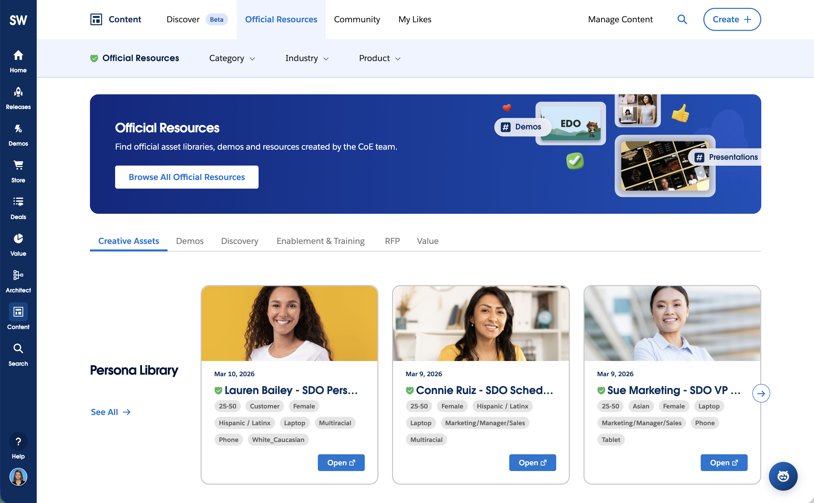

El hub interno de Salesforce para Solution Engineers y Account Executives. Una plataforma única donde tiene lugar la venta consultiva: calculadoras de ROI, Business Value Discovery, recursos para demos y, ahora, un asistente de Agentforce y Agent Value. He trabajado en el diseño de diferentes herramientas que componen esta gran plataforma, todas ellas construidas sobre un sistema de diseño compartido. Lideré el diseño de una familia de subproductos construidos sobre una misma base de diseño.Salesforce's internal hub for Solution Engineers and Account Executives. This is a single platform where consultive selling happen: calculadoras de ROI, Business Value Discovery, demo assets and, now, an Agentforce assistant and Agent Value. I have worked on the design of different tools that compos up this massive platform, all them based on a shared design system. El hub interno de Salesforce para Solution Engineers and Account Executives: el sitio donde ocurre la venta consultiva. Lideré el diseño de una familia de sub-productos construidos sobre un mismo design system.
My roleMi rol
Product Designer
UsersUsuarios
35,000+ globally+35.000 en global
StatusEstado
Shipped & ongoingEn producción y activo
Timeline
2020 – 2026
ContextContexto
Solutions Workspace no es un producto monolítico. Es un conjunto de herramientas que un vendedor abre la misma mañana: una herramienta de discovery para mapear la madurez del cliente, entornos de demo, contenido de readiness. Cada una con su brief, sus stakeholders y su ciclo de release.Solutions Workspace is the core internal platform where 30,000+ revenue roles, including Account Executives and Solution Engineers, prepare demos, discover content, and drive customer engagements.
Facing declining adoption and fragmented user experiences across its suite of internal tools, the platform required a unified strategy to rebuild user trust. Lo que lo mantiene unido es el design system que ayudo a construir y mantengo en producción: paleta, tipografía y librería de componentes propias, independientes de Lightning. Ese sistema es la razón de que un vendedor que salta entre herramientas no note que ha cambiado de producto.
35,000+
Solution Engineers and sellers on the platformSolution Engineers y vendedores en la plataforma
7+
Products shipping on one shared languageEquipos de producto lanzando sobre un mismo lenguaje
3+
Regions using the platformAños diseñando dentro del mismo ecosistema
1
Design System independent from Salesforce LightningAños diseñando dentro del mismo ecosistema
Sub-projectsSub-proyectos
Each one started as a separate brief. Read together, they are one argument about scaling a platform without scaling its surface area.Cada una empezó como un brief independiente. Leídas juntas, son un mismo argumento: escalar una plataforma sin escalar su superficie.
01
BVD was an outdated platform with significant usability limitations. The project aimed to redesign the tool so that salespeople could easily perform maturity assessments despite its complexity. I was part of this project, working on tasks such as designing the homepage, improving the Value Map's functionality, and creating intuitive filters so that salespeople could more easily understand the information and avoid frustration and leave the tool, which was common in the previous version. BVD era una herramienta obsoleta con deuda de usabilidad real, reconstruida para que un SE pudiera hacer una evaluación de madurez en self-service. Trabajé en el Value Map de la segunda versión —capability map, matriz de priorización y roadmap— además de la home y sus filtros, e integré la herramienta en Solutions Workspace para que dejara de ser un destino aparte.
02
The platform runs on its own design system, independent from Lightning and built for dense internal tools: colour and type carried as Figma variables, components with their states built in, accessibility rules treated as component properties, and written usage guidance plus Dev Mode handoff. I contribute to it and maintain it in production while four product teams keep shipping on top of it — answering their reasons to break the language with an extension rather than an exception. La plataforma funciona sobre su propio design system, independiente de Lightning y pensado para herramientas internas densas: color y tipografía como variables de Figma, componentes con sus estados incorporados, reglas de accesibilidad tratadas como propiedades del componente, y guías de uso escritas más handoff en Dev Mode. Contribuyo a él y lo mantengo en producción mientras cuatro equipos de producto siguen lanzando encima, respondiendo a sus motivos para romper el lenguaje con una extensión en lugar de una excepción.
03
I designed multiple microsites that were added to this resource page for the Solution Engineers to use as inspiration and reuse. This ensures that the SEs' demos are up-to-date, follow Salesforce guidelines, and enhance the professionalism with which we work. This creates a "wow" factor for our potential clients and allows us to gather all the information on a single website instead of confusing them by sending different emails and files. Un Solution Engineer necesita el entorno de demo listo antes de la llamada con el cliente, no después. Diseñé las superficies donde esos recursos se encuentran, se entienden y se reutilizan: el modelo de navegación y filtros, la forma en que un recurso declara qué demuestra y qué necesita, y el camino de encontrarlo a ejecutarlo. Así la preparación deja de depender de saber a qué compañero preguntar.

ApproachEnfoque
01
UX sits right at the center of execution. I align cross-functional partners with designers, POs, Devs, PMs, AEs, and RVPs, around a single unified product vision, ensuring everyone works toward the same objective with absolute clarity.La UX está justo en el centro de la ejecución. Alineo a partners cross-funcionales —diseñadores, POs, devs, PMs, AEs y RVPs— en torno a una única visión de producto, asegurando que todos trabajen hacia el mismo objetivo con absoluta claridad.
02
Design isn't just about output; it's about team efficiency. Operating under aggressive timelines, I build clear, developer-ready assets and detailed specs to remove friction and accelerate engineering implementation.El diseño no va solo de entregables, va de eficiencia de equipo. Trabajando con plazos agresivos, construyo assets listos para desarrollo y especificaciones detalladas que eliminan fricción y aceleran la implementación.
03
I immerse myself in complex B2B software to master domain mechanics quickly. This allows me to bridge the gap between business needs and technical reality, translating intricate requirements into unambiguous blueprints for engineering teams.Me sumerjo en software B2B complejo para dominar rápido la mecánica del dominio. Eso me permite cerrar la brecha entre las necesidades de negocio y la realidad técnica, traduciendo requisitos intrincados en planos sin ambigüedad para los equipos de ingeniería.
Key deliverablesEntregables clave